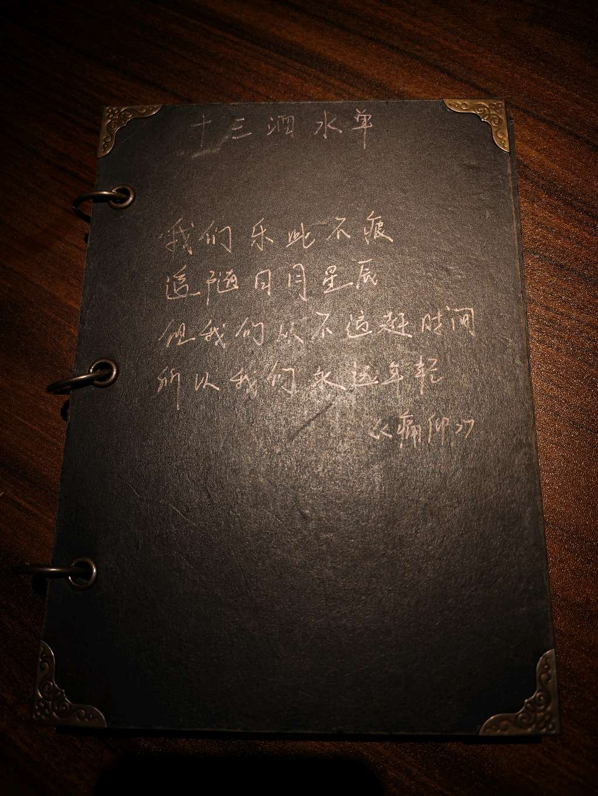

01
大一下 · 生活记录
A personal turning point
我想怎么过这一生
大一下对我来说最大的成长，不是又完成了多少事情，而是慢慢想明白了：这一生，我应该去做我想做、我喜欢做的事情，把自己的愿意放在第一位，然后勇敢去做。只有这样，人才能真正舒服、精彩地活着，也算认真对待自己的人生。
“我想”才是最关键的一环。

想明白这一步之后，我开始回头看自己这段时间的经历。家教、旅游、熬夜调整、做项目……我意识到，几乎做任何事情，都应该问问自己：我愿意吗？我喜欢吗？也许是想获得一种能力，憧憬一种状态，或者享受做事本身的乐趣。理由可以不同，但“我想”始终是最关键的一环。
现在，我大致想清楚未来想靠近的方向：健康领域。它离生活很近，也让我感到一种济世的意味；我喜欢计算机在健康领域里的应用，也希望把专业知识真正用起来。所以我已经开始做规划。科研、实习，以及本科阶段能接触到的相关事情，我都愿意认真去做。不是因为它们一定能立刻带来什么，而是因为我确实想走这条路，做起来也让我觉得有意思。
这份确定感也缓解了我很久以来的拧巴。以前我脑子里知道该做什么，却常常无意识地被手机吸住，几个方向一起拉扯，最后什么都没真正开始。现在我有了一个简单的判断标准：“我想不想做？”只要大脑不被手机牵着走，让自己重新掌握注意力，我就能朝一个方向发力，少一点拧巴，活得更爽快。